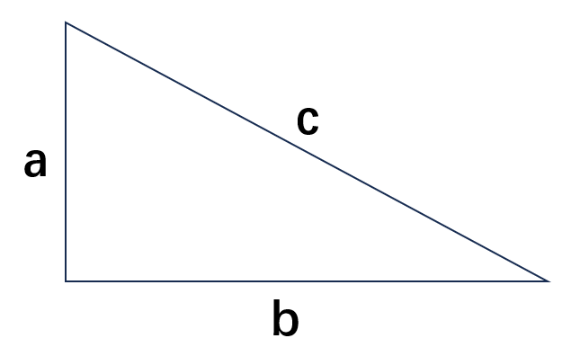
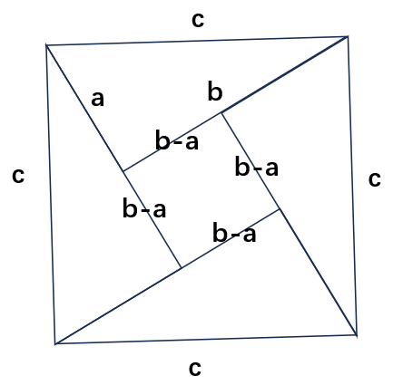
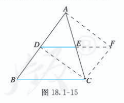
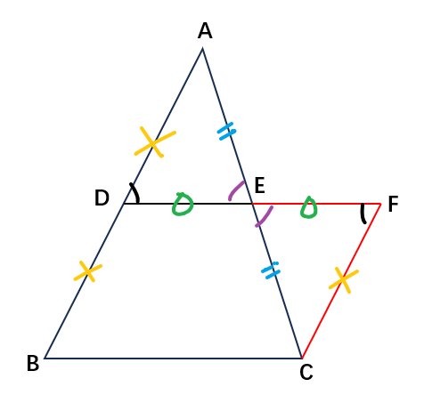
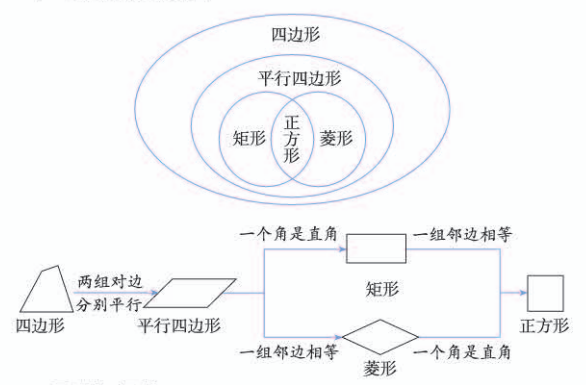
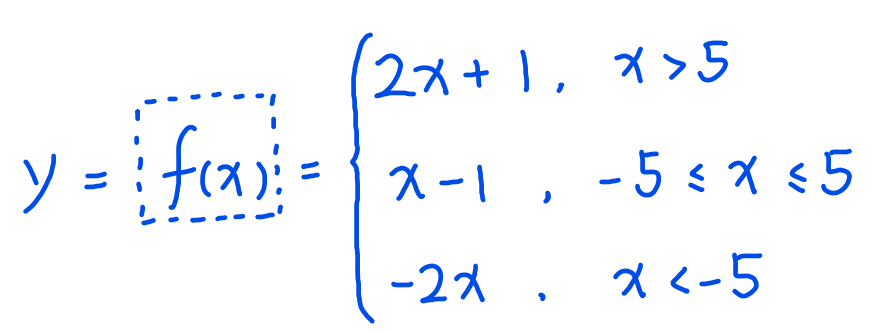
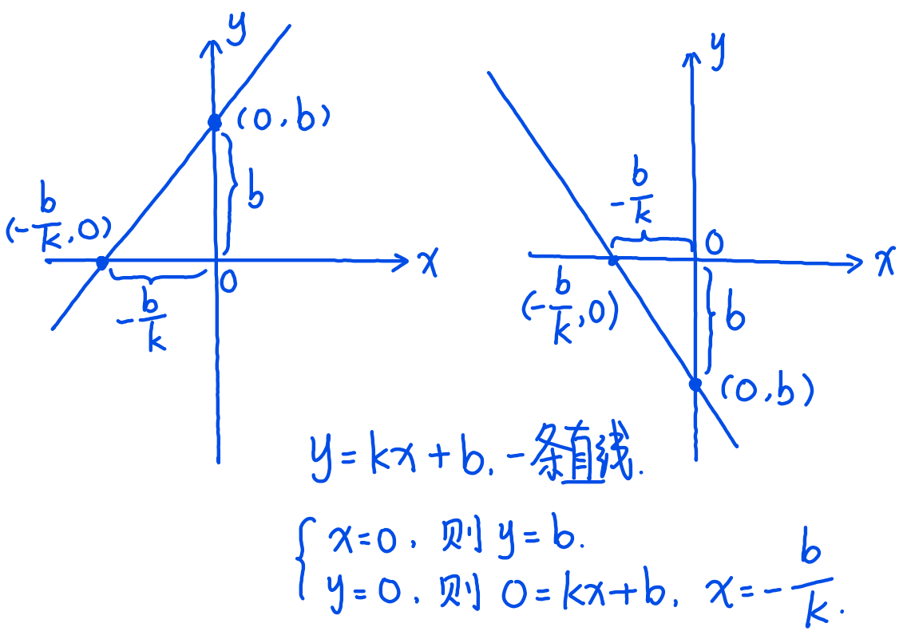

初中数学第十六章 二次根式16.1 二次根式16.2 二次根式的乘除16.3 二次根式的加减第十七章 勾股定理17.1 勾股定理17.2 勾股定理的逆定理第十八章 平行四边形18.1 平行四边形18.2 特殊的平行四边形第十九章 一次函数19.1 函数19.2 一次函数14.3 课题学习 选择方案第二十章 数据的分析20.1 数据的集中趋势20.2 数据的波动程度20.3 课题学习 体质健康测试中的数据分析
表达提升：“先宏观，后微观”（这就叫有条理），先说有几种，再说每种都是啥。
读书方法：非连续性的攒书（不是一个人写的），一定先看目录。
表达提升：灵活借用一些手势，辅助描述要表达的内容。
乘方：一个数乘以自己多次就叫乘方。乘几次，就叫几次幂，或几次方。
开方：将一个数的乘方还原为这个数的过程。开几次方，就意味着把被开的乘方看成是一个数的几次幂。
所以，乘方与开方是一对逆运算。
比如，
是对 1.5 开方，得到的数即 1.5 的平方根，即该平方根自己乘以自己2次就等于 1.5。所以， ，相当于裤子脱下又穿上（先开方、后平方）。所以， ，相当于裤子穿上又脱下（先平方、后开方）。
，不要忘记 (ab)2=a2b2，积的乘方的算法，这个数应该等于4x5=20。
根号代表开方，根号左上角标的数代表开几次方。
比如三次方根
目前只学到二次根号，即开平方，开平方一般不用在根号上标数。
二次根式：所谓“二次根”，即代表只有一个根号，为开平方根；所谓“式”，就不只是“数”，而是“包含字母的表达式”（表达式是更严谨的说法，教材上叫代数式）。
比如
二次根式的隐含成立条件：根号下的式子不能小于0（即
“负数次幂，方分之一”。
学二次根式的乘除法，是为了对二次根式进行运算和化简。
一般都要化简到最简二次根式才罢休，最简二次根式要求：
（1）分母中不含根号。（上下同乘根号式，比如
（2）能开尽开。（比如，
“先化简，再合并”。化简就是将二次根式化简成最简二次根式，合并就是把最简二次根式当作公因式提取，将作为倍数的常数合并（加减法）。
说白了，一个是化简二次根式，一个是提取公因式。
遇到加减乘除混合的包含二次根式的运算，如果发现有平方差公式、完全平方公式，则直接脱口而出结果（“瞪出来”）。另外，完全平方公式在运算时，先算a2+b2，再算加减2ab，这样比较快。
直角三角形中，短直角边叫勾，长直角边叫股，斜边叫弦。（《周髀算经》）
勾股定理：“勾三、股四、弦五”。
本质上是说，直角三角形斜边的平方，等于两直角边平方的和。

勾股定理证明：

美妙的公式，ab 在最后和完全平方公式中的 ab 一起消掉了。
勾股定理的逆定理：如果三角形的三边长，满足
证明过程是先画一个直角三角形，再画一个三角形三边都和原直角三角形相等，因为SSS可证两个三角形全等，则可知新三角形为直角三角形。（“钓鱼执法”）
平行四边形ABCD，记作“▱ABCD”。
性质1：对角相等。
性质2：对边相等。
对角相等证明：连接平行四边形的对角线（辅助线），可以做出两个内错角（内错角相等），拼在一起就是对角，所以对角相等。
对边相等证明：用ASA证明，被对角线切割出来的两个三角形全等，则对应边相等。
推论：已知平行四边形一个内角的度数，则其余内角度数可以计算出来。
方法一：利用四边形内角和公式。
方法二：利用同位角，再用180°度去减。
两条平行线之间的距离永远相等，距离是垂线段的长度。
性质3：平行四边形的对角线互相平分（通过全等证明）。
性质（因为是糖，所以甜），判定（因为甜，所以是糖）。
东西有啥性质，判定是啥东西。
判定1：两组对边分别相等的四边形是平行四边形。
判定2：两组对角分别相等的四边形是平行四边形。
判定3：对角线互相平分的四边形是平行四边形。
判定4：一组对边平行且相等的四边形是平行四边形。
判定4也是通过证全等证明的，核心思想是化归到前三大判定。
中位线：连接三角形两边中点的线段。（先点中点，再连线）
三角形中位线定理：三角形的中位线平行于三角形的第三边，并且等于第三边的一半。
 
定义（根本判定）：有一个角是直角的平行四边形是矩形，即长方形。
性质：直角三角形斜边上的中线等于斜边的一半。（补全为矩形证明）
判定：对角线相等的平行四边形是矩形。（证带公共边的大三角形全等，配合同位角相加等于180度，证出一个角是直角）
判定：有三个角是直角的四边形是矩形。（四边形内角和公式，两组对角分别相等的四边形是平行四边形，回归矩形定义）
定义（根本判定）：有一组邻边相等的平行四边形是菱形。
判定：对角线互相垂直的平行四边形是菱形。（证全等）
判定：四条边相等的四边形是菱形。（两组对边分别相等的四边形是平行四边形）
正方形是特殊的菱形，菱形是特殊的平行四边形。
长方形、菱形、正方形，都是特殊的平行四边形。
正方形（四条边都相等，四个角都是直角）也是特殊的长方形。

函：“装箭的袋子”（甲骨文），“乃遂盛樊於期之首，函封之”（《荆轲刺秦王》）。数：数值、数字。
函数，就是把数装进袋子里，或者装进箱子里，函总之是一个可以包含什么的套子，所以函数也可以叫“袋子数”、“箱子数”，甚至“包子数”。
想把一个数包进什么里面去，这个什么只能是一个式子，给这个式子起个名就叫“函数表达式”，教材上叫“解析式”，总之就是把这个箱子给解开。
函数的英语叫 function（房克深），所以，一般用 f(x) 表示函数，x就是被包进函数的那个数，只不过是个未知数。
联想一下，“f(” 和 “)” 就像是 “包子皮儿”，里面包的馅儿就是未知数，了解这个包子是啥馅的，就是在求函数的解析式。
举例，
如果x=1，则f(x)=f(1)=3；
同理，f(2)=5，f(10)=21。
……
对于一个函数，如果它的“馅儿”确定了，这个“包子”是不是就确定了？
到此为止，函数就是一个式子，式子中包含变量（可变的量，理解成“馅儿”）和常量（不变的量，理解成“面粉”），一旦变量确定，则式子的值也被确定，这种一个值随着另一个值的变化而变化的形式，就是函数。
这个变量，也叫自变量（自己可以变，你可以给它赋予任何值）；这个函数值，也叫因变量（因为自变量的变化而变化的量）。
一次是怎么回事？即自变量的次数，最高只有一次。
有一个自变量的函数叫一元函数，两个自变量就叫二元函数，结合自变量的次数而命名，比如一元一次函数、二元一次函数等。
初中数学，不会涉及 “f(x)” 这种写法，而是使用 “因变量=自变量+常数” 的写法，比如 y=2x+1，理解为当x=1的时候，y=3；当x=2的时候，y=5；当x=10的时候，y=21。
因变量=自变量+常数，用数学的形式表达：
y就是f(x)，y值随着x值的确定而确定、变化而变化。
一般地，一个一元一次函数的解析式，只需确定 k 和 b 的值即可算出。
比如，y=2x+1，这里的k就是2，b就是1，所以只要确定了 k 和 b，一个一元一次函数的解析式就能够解出来。
待定系数法：函数解析式的确定 → k,b的确定 → 只需代入两组实际数据，解二元一次方程组即可。
先设出函数解析式（y=kx+b），再根据条件（即两组实际数据）确定解析式中未知的系数（k和b），从而得出函数解析式的方法，叫做待定系数法。
通过平面直角坐标系，可以将一个函数直观地表示出来。
函数的每一组 (x,y) 值，就是平面直角坐标系上的每一个点的坐标 (x,y)。
将这些点连接起来，就是函数的图像！（数形结合）
求图像的函数解析式：取两点坐标，使用待定系数法求解。
技巧：取 (0,?) 和 (1,?) 带入，容易求解 k 和 b 的值。
画函数解析式的图像：取两组值，在平面直角坐标系中标出，两点连成一条直线。
技巧：取 x=0 和 x=1 得到的两点坐标，容易画出函数图像。
技巧：通过函数图线与x轴夹角的正负，可以直观地感受y值随x值的增减而增减。
扩展内容：
，注意没有b值，这种函数叫反比例函数。
- 正比例函数，即y与x成正比，即y:x=k，此为正比。
- 反比例函数，即y与x成反比，即xy=k，此为反比。
分段函数：写成带x取值范围的“函数组”的形式，但本质上是一个函数，只是分了段而已。

一次函数瞪眼法：实际就是将图像上的

方程、不等式与一次函数的关系，即：
结论：函数、方程、不等式，本质上都是一个东西，而且都能数形结合（以一次函数的形式画到平面直角坐标系上）。
函数图像上点的坐标，就是方程不等式的解。
通过将不同的方案（比如收费方案）转化为一次函数（有些可能是分段函数）。
通过计算函数的交点（让两个函数的y值相等，求x的坐标），找出相等的条件。
根据不同的条件，选择最合适的方案。
平均数：n个数加起来除以n，算出来的数就叫平均数。
因为用“n个数加起来除以n”这种方法算平均数最简单，像小学算术一样，所以也叫“算术平均数”。
加权平均数：权就是权力，权力就是分量（或者说重量）。算平均数时给每个数据，乘以不同的分量，最后除以总重量得出来的平均数，就叫加权平均数。
比如在你家，你妈妈说的话分量最大，比如有3斤重；你爸爸说话的分量不如你妈妈，比如有2斤重；你说话的分量最小，比如只有1斤重。那么，说话的分量，
妈:爸:你=3:2:1。
中位数：把每个样本对应的数据按大小个儿排列（排序），排在中间位置的样本的对应的数据（中位）。
如果样本数是偶数，就没有中间位置，那就取中间两个样本数据的平均数，作为中位数。
众数：众就是大众，大众就是最多。一组数据中对应样本数量最多（或者说出现次数）的数据。
方差：一组数据中，先计算全部数据的平均值，再计算每个数据与平均值的差的平方，求和、求平均，算出来的数就叫方差。
方差的思路是，通过计算每个数据相对于平均值的偏离程度（有正有负，就通过平方都转为正数），再对所有的偏离程度求平均值，得出一个平均偏离程度，通过这个平均偏离程度，来说明数据呈现的稳定性，稳定性的另一个说法就是波动，或者波动程度。
方差越大，数据的波动越大；方差越小，数据的波动越小。
（完）